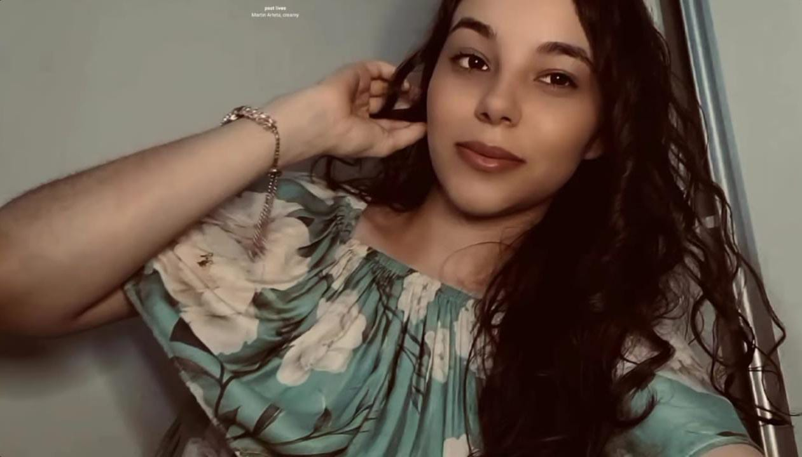

Minha Namorada, super gata, diva maravilhosa, dona de uma beleza estonteante, princesa que a disney não tem, dona da razão sempre certa e forte da relação
Desde o dia em que reagi ao seu storys dia (19/01/2025), nunca imaginaria o quão longe poderíamos chegar juntos, orei tanto ao senhor para ele me dar a sabedoria do que falar para não errar com você, foi então que decidi ser verdadeiro e transparente com você, lembro até de uma mensagem que mandei com pressa pra você, era eu falando que sou verdadeiro e trasnparente, porém o corretor colocou transferência kkkkk, esse dia eu ri de raiva,mas depois eu consertei e seguimos conversando, e graças a Deus deu tudo certo, desde então o senhor só tem abençoado a nossa relação, e eu tenho amado cada momento ao seulado e da sua família, obrigado por tudo meu amor, quero que saiba que eu te amo demais e que nada nesse mundo venha atrapalhar o nosso amor, e que venham os tempos bons, os tempos difíceis mas que em primeiro lugar sempre, venha o senhor Jesus, dono da nossa relação, porque se não fosse ele, não estaríamos juntos.
Este pequeno espaço é para te lembrar o quanto você é especial para mim e o quanto sou grato por ter você na minha vida, oro todos os dias pela sua vida que é tão importante para mim, você traz o meu riso a tona sempre, me ajuda nos meus problemas que tenho, minha pessoa que posso confiar além de Jesus, obrigado por ser essa namorada tão incrível e maravilhosa que é, te desejo um feliz dia dos namorados e que Deus possa continuar abençoando e derramando a graça dele sobre você sempre, EU TE AMO MEU AMOR❤️.
Com todo o meu amor,
Gabriel seu namorado mais gato, divo, perfeito e princeso ❤️